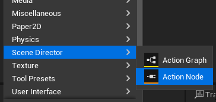
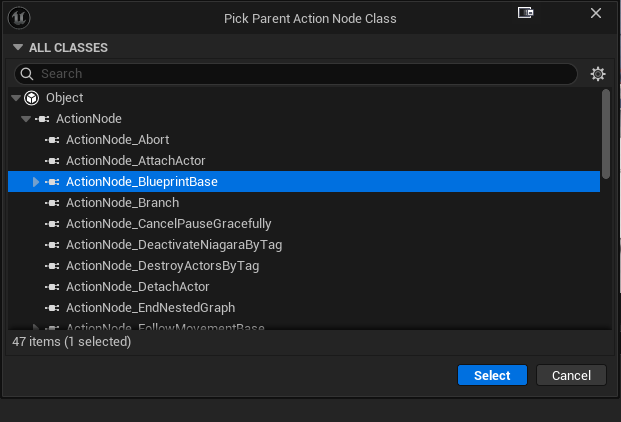

Custom Action Node Authoring
This guide explains how to create your own Action Graph task nodes in Blueprint or C++ — with full control over participant requirement, inputs/outputs, parameters, tick, and finish behavior.
1) Create Blueprint task asset
Create an Action Node asset in the Content Browser (Scene Director asset category).

Parent class:
- default:
ActionNode_BlueprintBase, - or any non-abstract class derived from
UActionNode.

2) Implement task events
In Blueprint, implement the events you need:
On Activate— runs once when the node starts. This is where most node logic lives: kick off timers, start animations, subscribe to events, etc.On Tick— runs every frame (or at the chosenTickInterval) while the node is active. Use only when you really need per-frame work; prefer event-driven logic.On Input Signal— runs when an extra input pin (other than the defaultIn) fires while the node is active. Read theInputIdto tell which pin it was.On End— runs once when the node finishes, no matter how. Use it to clean up: stop timers, unsubscribe, restore world state. ThebAbortedflag tells you whether the node was forcibly stopped.
Finish the node explicitly with:
End Task— normal finish. Pass theOutputIdof the pin you want to fire (leave empty forCompleted).Fail Task— finish through theFailedpin and record the given reason string in the editor trace and log. Use this instead ofEnd Task("Failed")so failures stay diagnosable.End Task Without Propagation— finish silently, without firing any output pin. Use it for nodes that should just stop (e.g. self-cancel) without continuing the graph from this branch.
Optional fan-out without finish:
Emit Output— fire a named output branch without ending the node. Useful for nodes that signal progress while still running.
Every node must eventually end itself (via one of the finish nodes above) — unless it is intentionally long-running and waits for an external abort or signal.
3) Configure participant behavior
A participant is the actor your node operates on (the character that plays the animation, walks the route, gets attached to something, etc.). Override the Requires Participant function in your Blueprint task to declare whether your node needs one:
- Return
truefor actor-bound tasks. Examples:Play Animation,Move To Anchor,Rotate To Player— they all act on a specific character. - Return
falsefor control or world-level tasks that don't touch a specific actor. Examples:Wait,Branch,Spawn Actor At Location,Set Player Invulnerability— they act on game state or globals, not on a single actor.
When true, fetch the bound actor inside On Activate with Get Participant Actor. If that actor becomes invalid mid-task, the base class auto-fails the node with a clear reason.
4) Configure inputs and outputs
Use class defaults arrays:
AdditionalInputIdsAdditionalOutputIds
Default pins are still present (In, Completed).
Important:
- Blueprint authoring currently cannot remove default
In/Completedpins. - If you need an exact custom exec shape (for example only
True/FalselikeBranch), implement that node in C++.
5) Configure parameters
Two practical options:
- Add editable Blueprint properties and expose selected ones as pins (
ExposedPropertyPinsfrom node details). - Feed values from graph
Get Parameter/ start inputs into those exposed pins.
For exposed property pins bound from graph parameters, runtime assignment is automatic on activation.
6) Node description and card presentation
The Action Graph editor draws each node as a card. Override these BlueprintNativeEvents on your task to make cards instantly readable in large graphs — implement only what you need, the defaults are sensible.
Get Node Description— short inline text shown on the card under the title. Use it to surface the most important parameter at a glance: aWaitnode returns"3.0 s", aMove To Anchorreturns the chosen anchor tag, anAttach Actorreturns the socket name.Uses Custom Node Header— returntrueto switch the card from the default class name title to a two-part header (prefix + title). Use only when a dynamic title carries real meaning, e.g. a nested-graph node that should show the child graph name.Get Custom Node Header Prefix— short tag shown before the title (for example"Nested","Wait","Branch"). Used only whenUses Custom Node Headerreturnstrue.Get Custom Node Header Title— main bold text in the header (for example, the chosen child graph name or the chosen anchor tag).Get Custom Node Header Prefix Color— tints the prefix label so node categories stand out at a glance (e.g. flow-control nodes use one color, asset-driven nodes another).Hide Node Description In Card— returntruewhen the custom header already conveys everything; the inline description block will be hidden.
Tip: keep all returned strings short — node cards have limited horizontal space.
7) Persistent state
Action Graph supports resume — a saved game can rebuild a running graph at the exact node and runtime state where it stopped. To make your custom Blueprint node resumable:
- Mark every variable that should survive a save/load as
SaveGame. Select the variable in the BP editor → in details, enableSaveGame. Only mark fields you genuinely need to restore (counters, the random branch you picked, time remaining on a timer, etc.) — not transient handles, spawned actor references, or component pointers. - Implement these two
BlueprintNativeEvents when your node holds runtime-only data that must be derived again on load:
- On Before Capture Persistent State — fires right before the node's snapshot is captured. Use it to copy volatile runtime values into your SaveGame variables (e.g. read remaining time from an active timer and store it in a SaveGame float).
- On Persistent State Restored — fires right after a snapshot was loaded back into the node. Use it to rebuild non-savable runtime state from your SaveGame variables: re-arm timers, re-subscribe to events, look up components/actors by tag again.
If your node has no resume-critical state at all, skip both events — the snapshot will simply be empty and the node will start from scratch on resume.
For a deeper walkthrough of how snapshots are captured and applied, see State persistence.
1) Create task class
Create a class derived from UActionNode:
UCLASS(meta = (DisplayName = "My Custom Task",
TaskCategory = "Scene Director | Custom",
Keywords = "Custom Example",
ToolTip = "Short node tooltip shown in Action Graph menu."))
class SCENEDIRECTORRUNTIME_API UActionNode_MyCustomTask : public UActionNode
{
GENERATED_BODY()
};Menu/editor metadata:
DisplayName— node name in graph menu.TaskCategory— grouping in node picker.Keywords— search hints.ToolTip— hover description.
2) Participant requirement
A participant is the actor your node operates on (the character that plays the animation, walks the route, etc.). By default a participant is required. Disable when the node is global / control-only (timers, branching, world-level effects):
virtual bool RequiresParticipant_Implementation() const override
{
return false;
}When true, fetch the bound actor inside NativeOnActivate() with GetParticipantActor(). If that actor becomes invalid mid-task, the base class auto-fails the node with a clear reason (the same kind of diagnostics you get from FailTask).
3) Inputs and outputs
Minimal way (override functions):
virtual TArray<FName> GetInputIds_Implementation() const override
{
return {ACTION_NODE_DEFAULT_INPUT, FName(TEXT("Stop"))};
}
virtual TArray<FName> GetOutputIds_Implementation() const override
{
return {ACTION_NODE_DEFAULT_OUTPUT, ACTION_NODE_OUTPUT_FAILED, FName(TEXT("Stopped"))};
}Alternative for simple additions:
- Fill
AdditionalInputIds/AdditionalOutputIds(base appends them).
Advanced flow pattern:
- Override
ShouldActivateOnIdleWithInput(InputId)when non-Ininputs must start an idle node.
4) Parameters and exposed pins
Two patterns:
- Typed custom parameter pins: override
GetParameterPinDefinitions_Implementation(). - Expose class properties as pins: use
ExposedPropertyPins(editor details).
If a property pin is externally bound to a graph input parameter, the base class applies the value automatically on activation.
Useful helpers:
IsParameterPinExternallyDriven(PinId)for cleaner node descriptions.TryGetParameterInputBindingSource(...)to resolve which graph input drives a pin.
5) Runtime hooks
Override the hooks you need on your UActionNode subclass:
NativeOnActivate()— runs once when the node starts. This is where most node logic lives: kick off timers, start animations, subscribe to delegates, capture initial state.NativeOnTick(float DeltaTime)— runs everyTickIntervalwhile the node is active. Only called when tick is enabled (TickInterval >= 0). Use only for genuinely per-frame work; prefer event-driven flow.NativeOnInputSignal(FName InputId)— runs when an extra input pin (other than the defaultIn) fires while the node is active. Branch onInputIdto handle each pin.NativeOnEnd(FName OutputId, bool bAborted)— runs once when the node finishes, no matter how. Use it to clean up: cancel timers, unsubscribe delegates, restore world state. ThebAbortedflag tells you whether the node was forcibly stopped from the outside.
Finish the node explicitly with one of:
EndTask(OutputId)— normal finish on the chosen output pin.NAME_None/ unset resolves toCompleted.FailTask(Reason)— finish through theFailedoutput, recordReasonin the editor graph trace (when tracing is enabled), and emit a singleLogSceneDirectorwarning. Prefer this overEndTask(ACTION_NODE_OUTPUT_FAILED)orEndTask(TEXT("Failed"))so failures stay diagnosable.EndTaskWithoutPropagation()— finish silently, without firing any output. Use it for self-cancel cases that should just stop without continuing the graph from this branch.EmitOutput(OutputId)— fire a named output branch without ending the node. Useful for nodes that signal progress while still running.
Every node must eventually end itself (via one of the finish methods above) — unless it is intentionally long-running and waits for an external abort or signal.
6) Full control over default pins
In C++ you can fully replace default exec pins by overriding the pin lists.
- Base defaults are
In(input) andCompleted(output). - If you return your own arrays from
GetInputIds_Implementation()/GetOutputIds_Implementation(), defaults are not auto-added. - Example:
Branchreturns onlyTrue/Falseoutputs (noCompleted), which is valid for condition-style tasks. - Example: for tasks that should not complete via a standard success path, you can omit
Completed.
(Blueprint task assets can only add pins via AdditionalInputIds / AdditionalOutputIds — fully replacing the default exec shape is a C++-only capability.)
7) Description and card presentation
Optional editor overrides:
GetNodeDescription_Implementation()UsesCustomNodeHeader_Implementation()GetCustomNodeHeaderPrefix_Implementation()GetCustomNodeHeaderTitle_Implementation()GetCustomNodeHeaderPrefixColor_Implementation()HideNodeDescriptionInCard_Implementation()
Use these to keep large graphs readable.
8) Persistent state support
Node persistent snapshot uses UPROPERTY(SaveGame) fields.
Recommended pattern for runtime values:
UPROPERTY(Transient, SaveGame)
Hooks (BlueprintNativeEvent):
OnBeforeCapturePersistentState()— snapshot volatile runtime intoSaveGamefields.OnPersistentStateRestored()— restore fixups (rebind handles/listeners if needed).- In C++, override
OnBeforeCapturePersistentState_Implementation()/OnPersistentStateRestored_Implementation(). - Optional low-level override:
SerializePersistentState(FArchive&).
9) Compact example
UCLASS(meta=(DisplayName="Branch Lite", TaskCategory="Action Graph | Custom"))
class SCENEDIRECTORRUNTIME_API UActionNode_BranchLite : public UActionNode
{
GENERATED_BODY()
public:
UPROPERTY(EditAnywhere, BlueprintReadOnly, Category="Branch")
bool bCondition = true;
virtual bool RequiresParticipant_Implementation() const override
{
return false;
}
virtual TArray<FName> GetOutputIds_Implementation() const override
{
return {TEXT("True"), TEXT("False")};
}
protected:
virtual void NativeOnActivate() override
{
EndTask(bCondition ? TEXT("True") : TEXT("False"));
}
};What this compact example shows:
- no participant requirement,
- custom output shape (
True/False) withoutCompleted, - immediate routing in
NativeOnActivate().
For full production examples (timers, input signals, persistence, cleanup), see:
Source/SceneDirectorRuntime/Public/ActionNodes/ActionGraph/Flow/ActionNode_Wait.hSource/SceneDirectorRuntime/Public/ActionNodes/ActionGraph/Flow/ActionNode_Branch.h
See also
- Compose your nodes with the Action Graph Toolkit — macros, portals, nested graphs, pause and abort.
- Persist resume-critical node fields via state serialization.